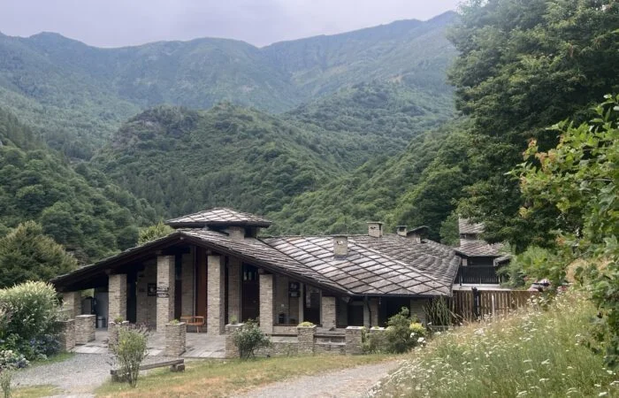
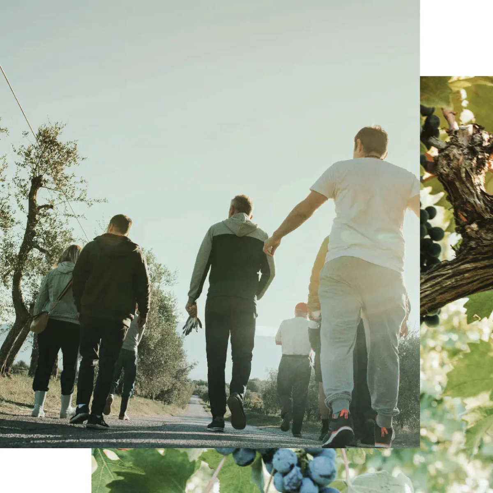
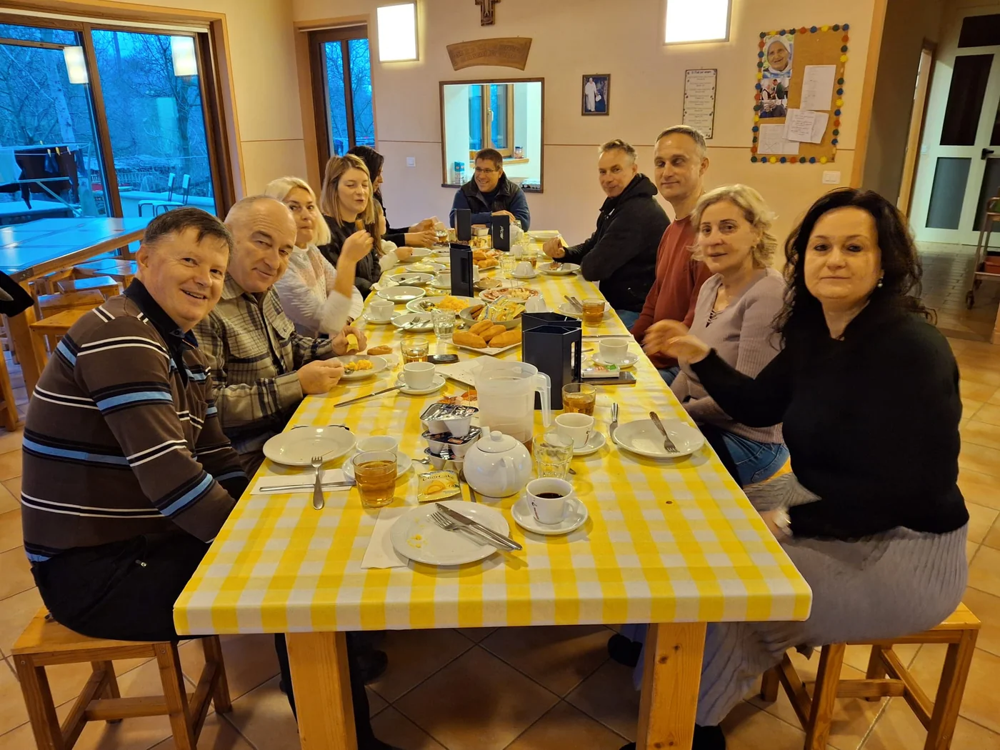
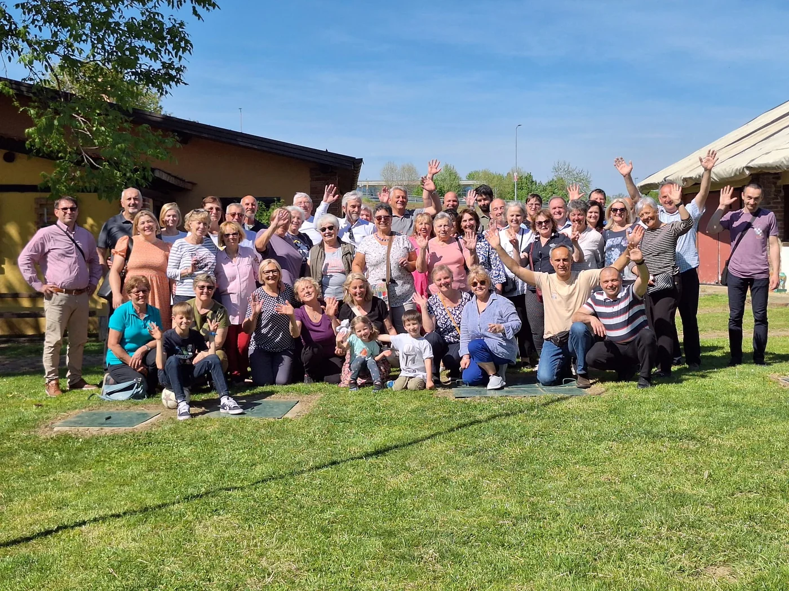
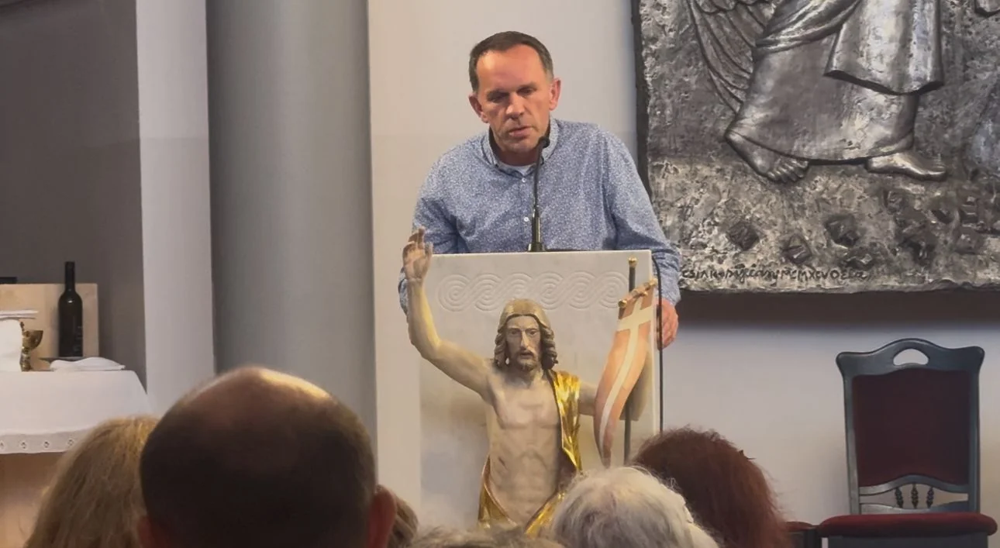
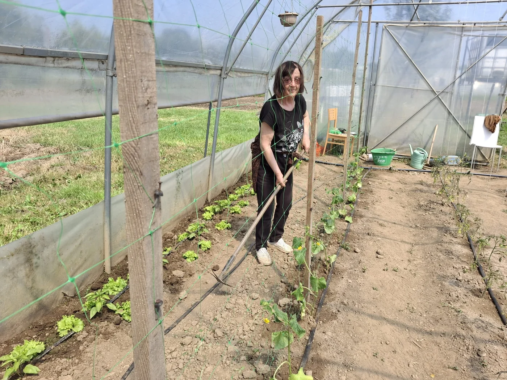
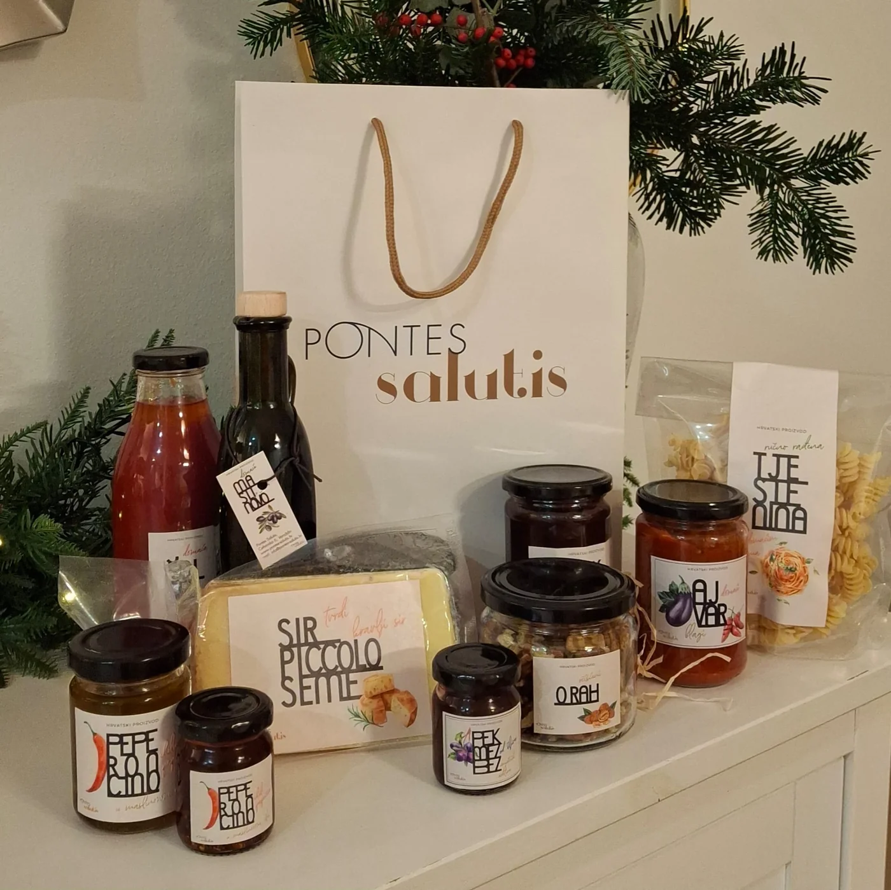
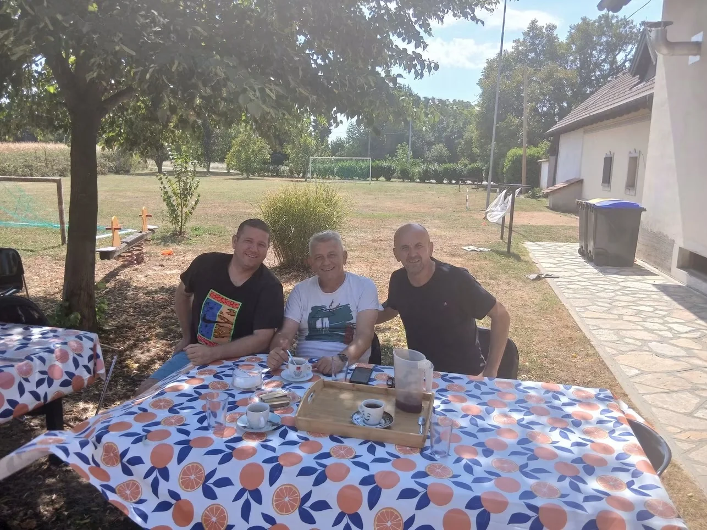
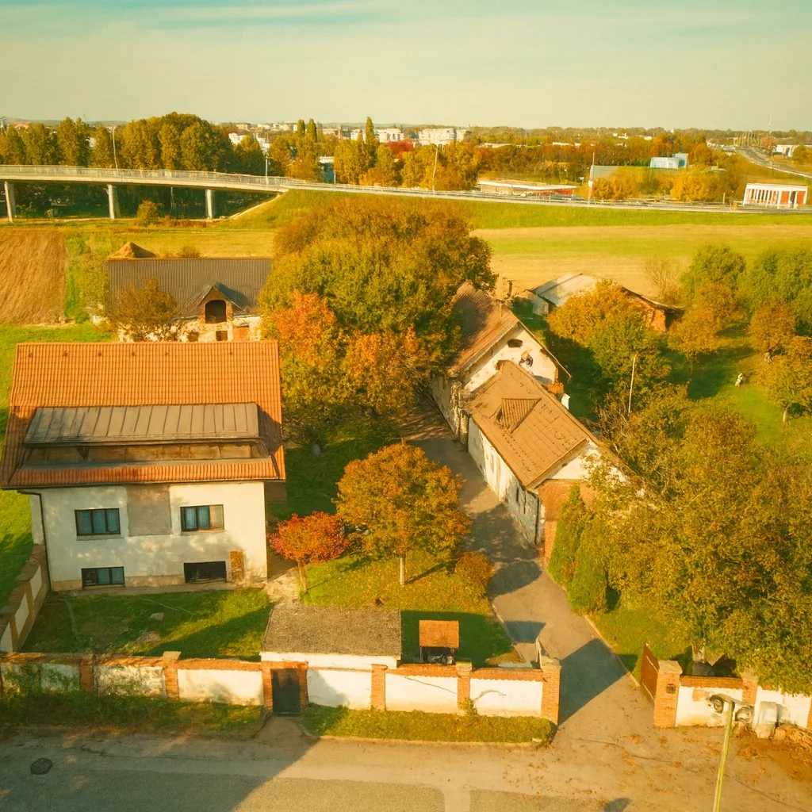
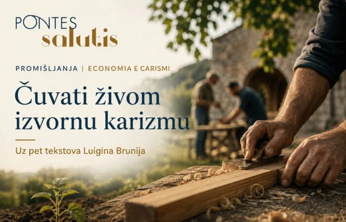

Duhovnost i razmišljanja
Kad molitva i rad daju ritam životu
Susret s monasima u Pra ’d Millu otvara pitanje kako molitva, rad i svakodnevna odgovornost oblikuju slobodniji život.
Pročitajte →
UDRUGA PONTES SALUTIS
Zajedništvo koje osnažuje.
Rad koji otvara nove mogućnosti.
TKO SMO
Pontes Salutis je Udruga koja želi biti most povratka prema samostalnom, odgovornom životu.
Iz iskustva života Zajednice Cenacolo nastavljamo put kroz zajedništvo, rad te duhovni i ljudski rast.
Upoznajte našu priču ↗Prostor za nutarnji rast.
Smisao u svakodnevnim koracima.
Put na kojem nismo sami.
NAŠ ŽIVOT I RAD

Život, rad i zajedništvo u Varaždinu.

Podrška na putu prema samostalnom i odgovornom životu.

Znanje, vještine i učenje kao priprema za samostalan život.

Zemlja, životinje i profesionalan rad kao dio odgovornog života.

Od plodova zemlje do novih prilika.

BRATOVŠTINA SV. JOSIPA RADNIKA • VARAŽDIN
Upoznajte svakodnevicu u kojoj se povezuju molitva, rad i zajedništvo.
Upoznajte BratovštinuPROJEKTI
Rad, učenje i odgovornost kroz razvoj suvremene poljoprivrede u Varaždinu.
Od vlastitih poljoprivrednih proizvoda do novih vještina i radnog iskustva.

Odgovorno korištenje resursa za dugoročnu održivost života i rada.
Prostori koji podržavaju život, rehabilitaciju, resocijalizaciju i rad.
Duhovni rast, stručna znanja, digitalna i financijska pismenost te životne vještine za život nakon Pontesa.
Razvojni projekti stvaraju uvjete za život, rad, obrazovanje i povratak u samostalnost.
PRIČE I NOVOSTI

Susret s monasima u Pra ’d Millu otvara pitanje kako molitva, rad i svakodnevna odgovornost oblikuju slobodniji život.
Pročitajte →
Razmišljanje uz tekstove Luigina Brunija o tome kako ekonomija, pravila i projekti mogu ostati u službi čovjeka i izvornog poslanja.
Pročitajte →UKLJUČI SE
Vrijeme, znanje ili podrška.
Svaki doprinos otvara mogućnosti.
PODRŽITE NAŠ RAD
Pomozite nam graditi prilike za život,
rad i ponovno uključivanje u društvo.
UZ NAS STOJE
Pontes raste uz tvrtke i organizacije koje nas godinama prate povjerenjem, suradnjom, donacijama i konkretnom podrškom našem radu.